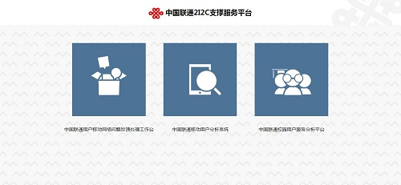
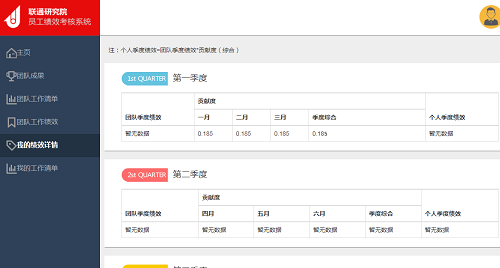
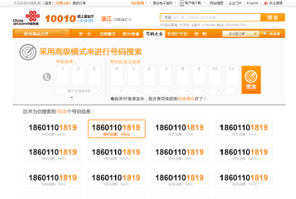

-
姓名李伟博
-
职业软件研发工程师
-
手机18600971014
-
邮箱buptweibo@163.com
- 两年web前端开发经验
- 掌握面向对象的开发理念
- 编码常思其可复用性、健壮性
- 了解自动化、模块化开发之道
- 对MVVM思想有一定了解
-
工作与学习经历
-
2016.3至今
中国联通集团总部 (2016.3至今)
中国联通电子商务部 前端开发工程师
- 承担“中国联通2I2C支撑服务平台”相关系统的前端开发工作；
- 作为前端开发团队主要研发人员，将vue全家桶首次引入部门前端项目实践；
- 基于eslint构建前端代码规范，基于webpack实现前端工程化构建；
- 选用element-ui构建前端页面布局，提高项目开发效率；
- 完成前端系统部分常用基础类库及UI组件编写；
- 任职期间,荣获中国联通IT骨干人才称号(5%)；
-
2012.9-2015.5
中国联通研究院(2015.5-2016.3)
软件与系统实验室 前端开发工程师
- 参与联通研究院绩效考核系统研发，负责系统需求分析和系统研发的整体流程；
- 设计整个系统javascript代码架构，基于bootstrap构架前端页面响应式布局。
- 独立承担“中国联通研究院优秀党支部评选”前后台的开发工作,包括数据库设计（mysql），后台逻辑处理（java/jsp)，完成前端页面布局并实现移动端适配，同时基于ECharts对数据进行了可视化呈现;
- 任职期间，撰写并发表专利两篇；
-
2012.9-2015.5
北京邮电大学(2012.9-2015.5)
信息与通信工程专业 硕士在读
- 研究方向为社交网络与移动互联网
- 专业排名:top3%(747人),曾荣获北京邮电大学三好学生等荣誉
- 负责“minelab魔法小屋”等网站前后台实现与维护，学习并掌握相关前端开发技术
-
精通前端(90%)
精通原生javascript，能脱离jQuery等类库编写代码
开发过部分前端常用的轻量级类库和组件
熟练运用vuejs、bootstrap、echarts等常用框架/类库
熟悉html5/css3/scss,掌握响应式布局
能够运用合理的结构和样式编写兼容主流浏览器的页面
-
涉猎后台 (65%)
熟悉java/ptyhon后台开发语言
有linnux/shell基础，了解node.js/express
掌握数据库，熟悉mysql，能编写简单的存储过程和触发器
-
了解周边(35%)
掌握常见设计模式，对MVVM思想有一定了解
具备面向对象思想和模块化、组件化的开发理念
掌握常用开发工具git、npm、chrome开发者工具等
了解自动化构建工具webpack
我的作品集
热衷于探索第三方类库/组件背后的技术原理，利用原生js逐行实现类似功能,
故作品可以大致分为三大类：
- 基础组件
- 通用组件
- 综合项目
-
作品一作品一基础组件
-
轻量级jQuery(源代码)
通过阅读jQuery源代码，参照jQuery的设计思想，舍弃了jQuery中对兼容性的处理操作，实现了类jQuery的部分模块功能，包括：
- 初始化模块、静态方法模块、实例方法模块
- 回调函数、异步处理与队列模块
- 数据缓存模块和事件模块等
-
轻量级MVVM(源代码)
通过探究MVVM框架如vue背后的实现原理，实现的轻量级MVVM，包括以下功能：
- 双向数据绑定，即从数据到视图的绑定和从视图层到数据的绑定
- 深层次的属性更改传递机制
- 简单的指令解析功能
-
轻量级动画库(源代码)
通过深入理解javascript DOM动画的实现原理，使用合理的设计模式设计封装的javascript动画类库，该轻量级动画库支持以下功能：
- 支持动画队列和动画的链式调用
- 支持预定义动画功能
- 支持动画reverse、finish等操作
-
轻量级帧动画库(源代码)
帧动画通常是基于雪碧图的实现原理，通过更改背景图片的位置，来实现类似gif动画的效果，本帧动画库支持以下功能：
- 背景图片预加载
- 帧动画的启动/暂停/停止/重启等
- 帧动画的延迟执行/重复执行等等
- 提供高级接口，支持每帧动画行为的自定义
-
作品二作品二通用组件
- 组件化
- 可复用性
- 合理使用设计模式进行类库封装
- 基于基础组件实现通用组件功能
- 探索常见第三方组件背后的技术原理
-
基于jQuery实现的轻量级轮播组件，支持水平/垂直轮播，支持相关灵活配置：如可配置单屏展现的幻灯片个数、每屏滚动的幻灯片个数、是否开启导航控制以及自动轮播效果等等。
-
一个轻量级的jQuery日历组件，支持日期选择，并可配置日期选择范围；支持时间段选择，并可配置时间段选择的最短和最长跨度
-
一个轻量级的jQuery树形菜单组件，支持菜单结构预定义，也支持菜单结构的动态生成；可配置树中菜单节点的展开/折叠状态，以及是否开启节点的插入/删除功能等
-
基于jQuery实现的表单验证组件，支持常见的验证类型(非空校验、数值校验、等值校验等),同时支持自定义正则表达式校验；支持自定义校验提示信息；并可配置校验触发的时机等
-
一个轻量级的jQuery分页组件，支持相关灵活的自定义配置
-
2I2C支撑维系平台vue/vuex/axios/scss该平台包含若干子系统：用户分析，网络问题反馈处理等。借助该平台，联通2I2C项目经理可及时了解产品用户群体,及时处理省分客服反馈的问题等。
-
中国联通研究院绩效考核系统bootstrap/java/jsp/echarts支撑中国联通研究院绩效考核管理。变革了中国联通研究院传统的、手工任务分配和绩效考核的方式，保证了企业绩效考核的公正、公开和透明。
-
 html5/css3/jQuery/javascript工作之余断断续续维护的一个纯个人的静态网站，记录和男友在一起的些许点滴，作为将程序媛的技术转化为生活中小浪漫的业余尝试。不失一些亮点，如随机散落和3D翻转的照片墙等。不过整体鉴于是业余项目，或许会有设计较渣，借鉴痕迹较重等诟病，以及创意优于技术，文案好于实现等不足，望看客轻拍。
html5/css3/jQuery/javascript工作之余断断续续维护的一个纯个人的静态网站，记录和男友在一起的些许点滴，作为将程序媛的技术转化为生活中小浪漫的业余尝试。不失一些亮点，如随机散落和3D翻转的照片墙等。不过整体鉴于是业余项目，或许会有设计较渣，借鉴痕迹较重等诟病，以及创意优于技术，文案好于实现等不足，望看客轻拍。 -
中国联通选号系统html5/jQuery/velocity.js等为中国联通用户提供靓号选择功能,支持不同类型的靓号选择、情侣号选择、生日类型号码选择等等。